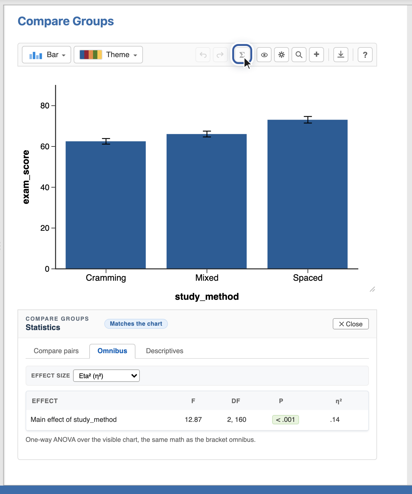

Pandion Plots
Pandion Plots
Workshop · Task 5 of 7
Exploring statistics.
Showing
The chart suggests that groups might differ; this task is about checking that with numbers. Everything lives in the chart’s Statistics panel: the Σ Stats button on the chart toolbar, between redo and the eye.
- Open the Σ Stats panel and its Omnibus tab. Read F and p: the overall answer to “do the conditions differ at all?”. Note the Matches the chart badge: these numbers recompute whenever the chart changes. Right-click one of your data points and exclude it, for example, and F and p adjust to the points that remain. (Restore it the same way.)
- Switch to Compare pairs. Every pair gets a row, a Welch t by default, and a green p when it is significant. Tick Spaced vs Cramming and Spaced vs Mixed, then click Place brackets and watch them land on the figure. (The same brackets live on the + menu; the panel just places them with the numbers already checked.)
- Click the ▾ next to Place brackets and pick what the brackets say: asterisks, the p value, or a full APA line. The figure now carries its own conclusion.


Checkpoint: two brackets on the chart, labeled the way you chose.
Going deeper later: the statistics guide covers corrections for multiple comparisons and what the error-bar types mean, starting exactly where this task ends.